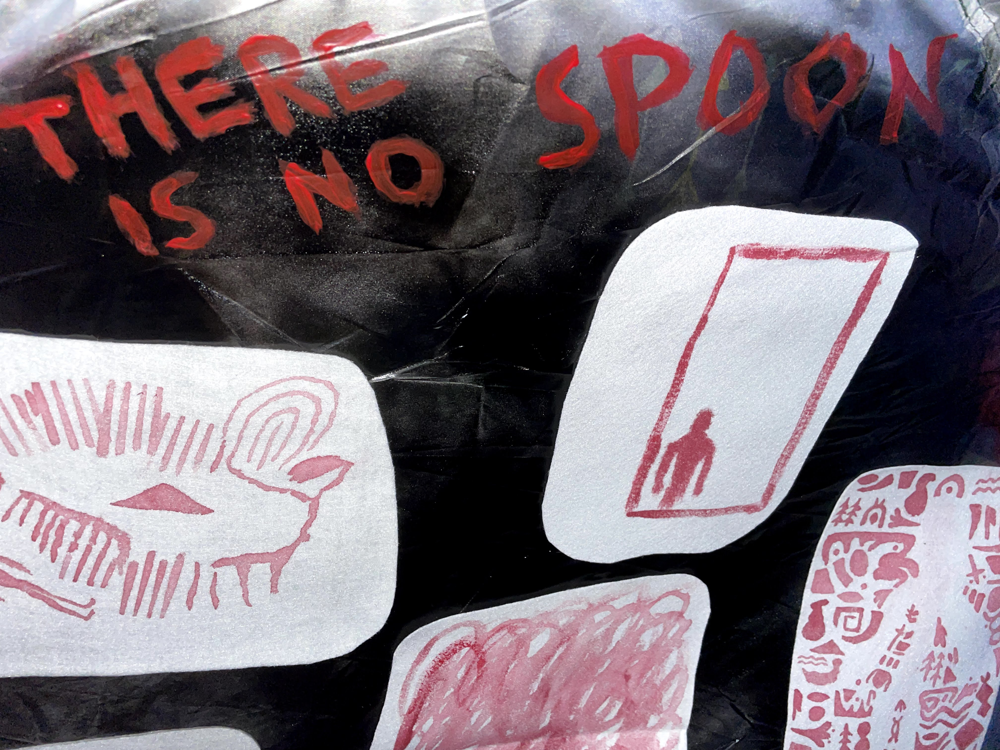

During the quarantine, I felt stuck in my flat, where I shared with another 10 people. At first, it was nice to spend more time with them, like I found out one of my roommates is nearsighted and he has a pair of cool glasses. But later on, I became sensitive since I could hear the people around me doing other things when I was working, which made it hard for me to be focused. And the situation got worse, little daily matters would put me in a bad mood, like the dirty dishes piled up in the sink with flies buzzing around, the rotten onion stuck in the corner of the fridge, and even my messy long hair were driving me nuts.
Me time Tent
I wouldn't mind cleaning it up usually, but at the time, those scenes brought up all the anger in my mind, and swamped me with anxiety, losing control, and other negative feelings at the same time. I was getting moody and having a bad temper with my mates.
I spent a Friday night camping on the rooftop and had the best sleeping quality during the past three weeks. However, the other day after I woke up, I had a strong feeling not to leave the tent since it gave me a sense of security, yet the question "what am I afraid of?" popped up. I inherited the doing from our ancestors by building up a wall or a barrier to protect myself against outside interference, which sparked me with the idea of visualizing everything that pissed me off into a picture. This is how prehistoric people did when they were trying to express something, and I feel that there is no word for me to deliver those complex emotions. Still, the images, as you can see from the sidewall, those feelings piled up like a pyramid drawn by me and other of my roommate
▍duration: 1-30.Jun.2021

＞ in this way, me and my roommates bullet point out all the things that frustrate us, and in the end I found all the paranoid, angry feelings were made up by ourselve.


{kind=link}